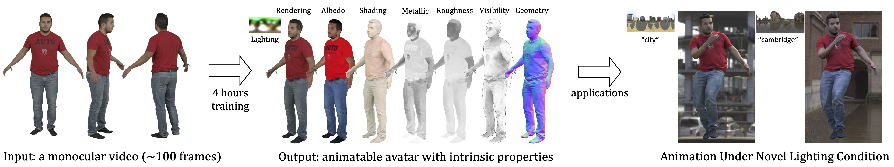
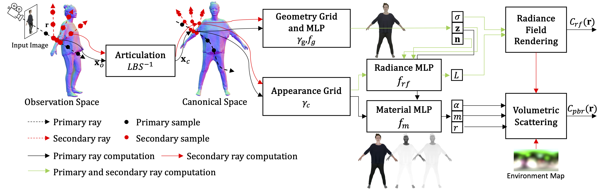

IntrinsicAvatar employs volumetric scattering and explicit ray tracing to learn relightable and animatable avatars from monocular videos. Learning an avatar can be done in less than 4 hours while the learned avatars can be rendered under novel poses and lighting conditions.

Overview
Given an input image and associated camera rays, we warp the rays to the canonical space and do both primary and secondary ray marching/tracing in canonical space. We model geometry with a geometry hash grid \( \gamma_g \) and MLP \( f_g \), while also modeling volumetric radiance and material with an appearance grid \( \gamma_c \) and two additional MLPs \( f_{rf}, f_m \). We supervise both \( C_{rf} \) and \( C_{pbr} \) using a L1 loss w.r.t. the input image. Importantly, we model the physically based inverse rendering process with volumetric scattering and explict secondary ray tracing.

Volumetric Scattering
Instead of following the standard rendering equation that was designed specifically for surface rendering, we trace back the root of the popular neural radiance field, which is the radiative transfer equation. We formulate the inverse rendering problem as a volumetric scattering process, which is shown to be more robust than surface rendering when abrupt depth changes are present.